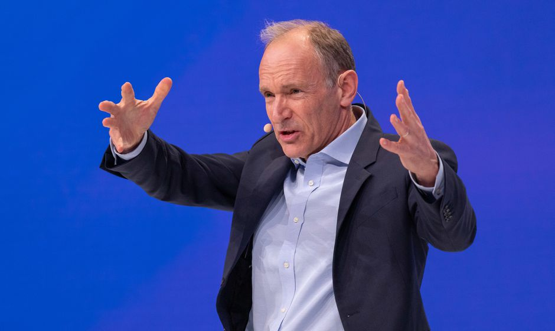

Tim Berners-Lee is a legendary figure, and his article Long Live the Web draws our attention to very contemporary issues regarding politics, science, society, privacy, capital, and many more. It’s really shocking that we as people or, more broadly, as governments, don’t immediately contact him in any matters relating to the future of the internet. And yet, he himself argues against that idea. To Berners-Lee, if he were to have that much power of the future of the internet, then the internet would cease to function how he idealizes it. The very nature of him being the de facto leader of the internet would create too much centralization. Still, in our current internet era where we are all being constantly data-mined, tracked, and analyzed, it feels necessary (now more than ever) to have some benevolent internet dictator to ensure the guidance of the internet into the hands of the people and into the hands of science.
Interestingly, Berners-Lee does not necessarily seem to take issue with datamining, just how the data is collected, stored, and protected. While he, like any reasonable person, is against corporations like Facebook and Google selling data to advertisers for a profit, as I understand it he seems to be fine with datamining as long as it is independent, open-source, anonymous, and serving the interest of science. There is so much data out there that if it could only be accessed could lead to so many fascinating and important discoveries. Berners-Lee is really promoting the spiritual successor to the ideas proposed by Vannevar Bush- the necessity of taking all of our tiny and seemingly unimportant pieces of data and science and research and making it accessible, sortable, and relevant.